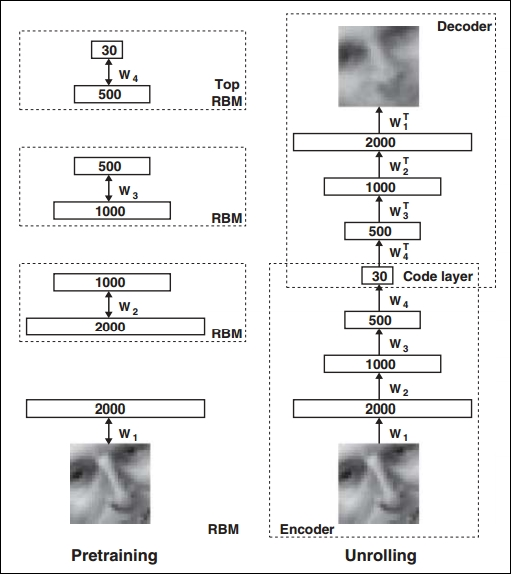
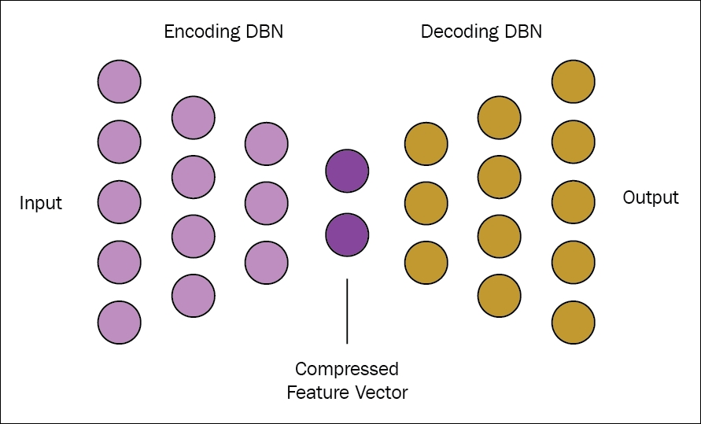
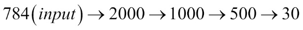
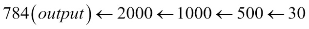

So far, we have talked only about single-layer encoders and single-layer decoders for a simple autoencoder. However, a deep autoencoder with more than one encoder and decoder brings more advantages.
Feed-forward networks perform better when they are deep. Autoencoders are basically feed-forward networks; hence, the advantages of a basic feed-forward network can also be applied to autoencoders. The encoders and decoders are autoencoders, which also work like a feed-forward network. Hence, we can deploy the advantages of the depth of a feed-forward network in these components also.
In this context, we can also talk about the universal approximator theorem, which ensures that a feed-forward neural network with at least one hidden layer, and with enough hidden units, can produce an approximation of any arbitrary function to any degree of accuracy. Following this concept, a deep autoencoder having at least one hidden layer, and containing sufficient hidden units, can approximate any mapping from input to code arbitrarily well.
One can approximate any continuous function to any degree of accuracy with a two-layer network. In the mathematical theory of artificial neural networks, the universal approximation function states that a feed-forward network can approximate any continuous function of a compact subset of Rn, if it has at least one hidden layer with a finite number of neurons.
Deep autoencoder provides many advantages as compared to shallow architecture. The non-trivial depth of an autoencoder suppresses the computation of representing a few functions. Also, the depth of autoencoders drastically reduces the amount of training data required to learn the functions. Even experimentally, it has been found that deep autoencoders provide better compression when compared to shallow autoencoders.
To train a deep autoencoder, the common practice is to train a stack of shallow autoencoders. Therefore, to train a deep autoencoder, a series of shallow autoencoders are encountered frequently. In the next subsections, we will discuss the concept of deep autoencoders in depth.
The design of a deep autoencoder explained here is based on MNIST handwritten digit databases. In the paper [133],a well-structured procedure of building and training of a deep autoencoder is explained. The fundamentals of training a deep autoencoder is through three phases, that is: Pre-training, Unrolling, and Fine-tuning.
We already have enough insights that a single layer of hidden units is not the proper way to model the structure in a large set of images. A deep autoencoder is composed of multiple layers of a Restricted Boltzmann machine. In Chapter 5, Restricted Boltzmann Machines we gave enough information on how a Restricted Boltzmann machine works. Using the same concept, we can proceed to build the structure for a deep autoencoder:

Figure 6.4: Pre-training a deep autoencoder involves learning a stack of Restricted Boltzmann machines (RBMs) where each RBM possesses a single layer of feature detectors. The learned features of one Restricted Boltzmann machine is used as the 'input data' to train the next RBM of the stack. After the pre-training phase, all the RBMs are unfolded or unrolled to build a deep autoencoder. This deep autoencoder is then fine-tuned using the backpropagation approach of error derivatives.
When the first layer of the RBM is driven by a stream of data, the layer starts to learn the feature detectors. This learning can be treated as input data for learning for the next layer. In this way, feature detectors of the first layer become the visible units for learning the next layer of the Restricted Boltzmann machine. This procedure of learning layer-by-layer can be iterated as many times as desired. This procedure is indeed very much effectual in pre-training the weights of a deep autoencoder. The features captured after each layer have a string of high-order correlations between the activities of the hidden units below. The first part of Figure 6.4 gives a flow diagram of this procedure. Processing the benchmark dataset MNIST, a deep autoencoder would use binary transformations after each RBM. To process real-valued data, deep autoencoders use Gaussian rectified transformations after each Restricted Boltzmann machine layer.

Figure 6.5: Pictorial representation of how the number or vectors of encoder and decoder varies during the phases.


So, the main purpose of decoding half of a deep autoencoder is to learn how to reconstruct the image. The operation is carried out in the second feed-forward network that also performs back propagation, which happens through reconstruction entropy.
So, you now have sufficient idea of how to build a deep autoencoder using a number of Restricted Boltzmann machines. In this section, we will explain how to design a deep autoencoder with the help of Deeplearning4j.
We will use the same MNIST dataset as in the previous section, and keep the design of the deep autoencoder similar to what we explained earlier.
As already explained in earlier examples, a small batch size of 1024 number of examples is used from the raw MNIST datasets, which can be split into N multiple blocks of Hadoop. These N multiple blocks will run on the Hadoop Distributed File System by each worker in parallel. The flow of code to implement the deep autoencoder is simple and straightforward.
The steps are shown as follows:
1024 number of examples.fit() method.final int numRows = 28;Initial configuration needed to set the Hadoop environment. The batchsize is set to 1024.
final int numColumns = 28;
int seed = 123;
int numSamples = MnistDataFetcher.NUM_EXAMPLES;
int batchSize = 1024;
int iterations = 1;
int listenerFreq = iterations/5;
Load the data into the HDFS:
log.info("Load data....");
DataSetIterator iter = new MnistDataSetIterator(batchSize,numSamples,true);
We are now all set to build the model to add the number of layers of the Restricted Boltzmann machine to build the deep autoencoder:
log.info("Build model....");
MultiLayerConfiguration conf = new NeuralNetConfiguration.Builder()
.seed(seed)
.iterations(iterations)
.optimizationAlgo(OptimizationAlgorithm.LINE_GRADIENT_DESCENT)
To a create a ListBuilder with the specified layers (here it is eight), we call the .list() method:
.list(8)
The next step now is to build the encoding phase of the model. This can be done by the subsequent addition of the Restricted Boltzmann machine into the model. The encoding phase has four layers of the restricted Boltzmann machine in which each layer would have 2000, 1000, 500, and 30 nodes respectively:
.layer(0, new RBM.Builder().nIn(numRows *
numColumns).nOut(2000).lossFunction(LossFunctions.LossFunction
.RMSE_XENT).build())
.layer(1, new RBM.Builder().nIn(2000).nOut(1000)
.lossFunction(LossFunctions.LossFunction.RMSE_XENT).build())
.layer(2, new RBM.Builder().nIn(1000).nOut(500)
.lossFunction(LossFunctions.LossFunction.RMSE_XENT).build())
.layer(3, new RBM.Builder().nIn(500).nOut(30)
.lossFunction(LossFunctions.LossFunction.RMSE_XENT).build())
The next phase after encoder is the decoder phase, where we will use four more Restricted Boltzmann machines in a similar manner:
.layer(4, new RBM.Builder().nIn(30).nOut(500)
.lossFunction(LossFunctions.LossFunction.RMSE_XENT).build())
.layer(5, new RBM.Builder().nIn(500).nOut(1000)
.lossFunction(LossFunctions.LossFunction.RMSE_XENT).build())
.layer(6, new RBM.Builder().nIn(1000).nOut(2000)
.lossFunction(LossFunctions.LossFunction.RMSE_XENT).build())
.layer(7, new OutputLayer.Builder(LossFunctions.LossFunction.MSE)
.activation("sigmoid").nIn(2000).nOut(numRows*numColumns).build())
As all the intermediate layers are now built, we can build the model by calling the build() method:
.pretrain(true).backprop(true)
.build();
The last phase of the implementation is to train the deep autoencoder. It can be done by calling the fit () method:
MultiLayerNetwork model = new MultiLayerNetwork(conf); model.init(); model.setListeners(new ScoreIterationListener(listenerFreq)); log.info("Train model...."); while(iter.hasNext()) { DataSet next = iter.next(); model.fit(new DataSet(next.getFeatureMatrix(),next .getFeatureMatrix())); }